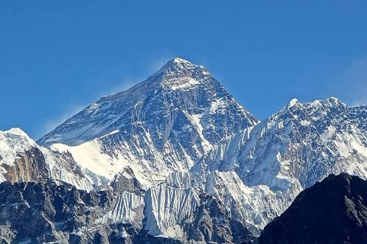

Upcoming Events

Boudhanath Stupa in Kathmandu
Boudhanath Stupa is one of the most famous religious and historical places in Kathmandu, Nepal. It is an important pilgrimage site for Buddhists from Nepal and around the world.
Learn More
Mt.Everest (Sagarmatha)
Mount Everest is the highest mountain in the world, standing at 8,848.86 metres above sea level. It is located in the Himalayas, on the border between Nepal and China (Tibet). In Nepal, it is known as Sagarmatha.
Learn More